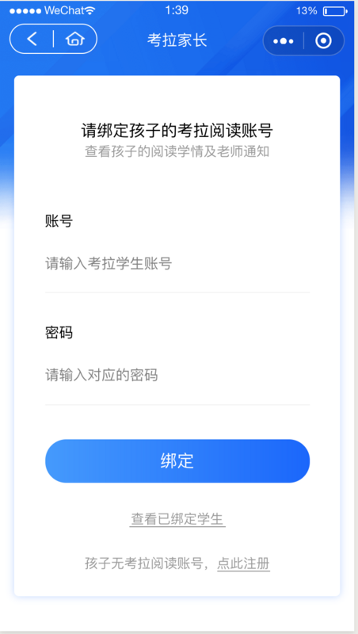

摘要： 小程序开发技巧。
Fundebug经授权转载，版权归原作者所有。
产品说小程序返回到首页不太方便，想添加返回首页按钮，UI说导航栏能不能设置背景图片，因为那样设计挺好看的。

这产品和UI都提需求了，咱也不能反驳哈，所以开始调研，分析可行性方案；1、可以添加悬浮按钮。2、自定义导航栏。
添加悬浮按钮，是看起来是比较简单哈，但是感觉不太优雅，会占据页面的空间，体验也不太好。所以想了下第二种方案，自定义导航栏既可以实现产品的需求还可以满足UI的设计美感，在顶部空白处加上返回首页的按钮，这样和返回按钮还对称（最终如图所示，顶部导航栏是个背景图片，分两块组合起来）。
一、实现的前提
1、首先查看文档，看文档里关于自定义导航栏是怎么规定的，有哪些限制；还有小程序自定义导航栏全局配置和单页面配置的微信版本和调试库的最低支持版本。
2、在app.json window 增加 navigationStyle:custom ，顶部导航栏就会消失，只保留右上角胶囊状的按钮，如何修改胶囊的颜色呢;胶囊体目前只支持黑色和白色两种颜色 在app.josn window 加上 "navigationBarTextStyle":"white/black"
3、还要考虑加返回按钮和返回首页的按钮，适配不同的机型
先说下两种配置方法：
①全局配置navigationStyle：
app.json
{
"usingComponents": {
"navigationBar": "/components/navigationBar/navigationBar"
},
"window": {
"navigationStyle": "custom"
}
}②单页面配置navigationStyle
自定义的页面.json
{
"window": {
"navigationStyle": "default"
}
}
{
"navigationStyle": "custom",
"usingComponents": {
"navigationBar": "/components/navigationBar/navigationBar"
}
}两者的区别就是，全局配置放在app.json文件里，单页面配置放在自定义页面配置文件里。
二、实现的步骤
以下说下几个要点：
1、自定义导航栏文本，是否显示返回，是否显示返回首页,导航栏高度
2、statusBarHeight，用来获取手机状态栏的高度，这个需要在全局app.js中的onLaunch，调用wx.getSystemInfo获取，navigationBarHeight+默认的高度，这个是设定整个导航栏的高度，
3、还有注意的，在写样式距离和大小时建议都用px，因小程序右边的胶囊也是用的px，不是rpx。
4、因为自定义导航栏每个页面都要写，所以把导航栏封装了公共组件，这样只需要在每个页面引入即可。
如下是封装的导航栏组件：
wxml
<view class="navbar" style="{{'height: ' + navigationBarHeight}}">
<view style="{{'height: ' + statusBarHeight}}"></view>
<view class='title-container'>
<view class='capsule' wx:if="{{ back || home }}">
<view bindtap='back' wx:if="{{back}}">
<image src='/images/back.png'></image>
</view>
<view bindtap='backHome' wx:if="{{home}}">
<image src='/images/home.png'></image>
</view>
</view>
<view class='title'>{{text}}</view>
</view>
</view>
<view style="{{'height: ' + navigationBarHeight}};background: white;"></view>这里有个需注意的问题，就是一般会出现自定义导航栏，下拉页面，导航栏也随着会下拉，这种问题是因为设置fixed后页面元素整体上移了navigationBarHeight，所以在此组件里设置一个空白view元素占用最上面的navigationBarHeight这块高度
wxss
.navbar {
width: 100%;
background-color: #1797eb;
position: fixed;
top: 0;
left: 0;
z-index: 999;
}
.title-container {
height: 40px;
display: flex;
align-items: center;
position: relative;
}
.capsule {
margin-left: 10px;
height: 30px;
background: rgba(255, 255, 255, 0.6);
border: 1px solid #fff;
border-radius: 16px;
display: flex;
align-items: center;
}
.capsule > view {
width: 45px;
height: 60%;
position: relative;
.capsule > view:nth-child(2) {
border-left: 1px solid #fff;
}
.capsule image {
width: 50%;
height: 100%;
position: absolute;
left: 50%;
top: 50%;
transform: translate(-50%,-50%);
}
.title {
color: white;
position: absolute;
top: 6px;
left: 104px;
right: 104px;
height: 30px;
line-height: 30px;
font-size: 14px;
text-align: center;
overflow: hidden;
text-overflow: ellipsis;
white-space: nowrap;
}js
const app = getApp()
Component({
properties: {
text: {
type: String,
value: 'Wechat'
},
back: {
type: Boolean,
value: false
},
home: {
type: Boolean,
value: false
}
},
data: {
statusBarHeight: app.globalData.statusBarHeight + 'px',
navigationBarHeight: (app.globalData.statusBarHeight + 44) + 'px'
},
methods: {
backHome: function () {
let pages = getCurrentPages()
wx.navigateBack({
delta: pages.length
})
},
back: function () {
wx.navigateBack({
delta: 1
})
}
}
})json
{
"component": true,
"usingComponents": {}
}最终还需要考虑下版本兼容的问题，毕竟还有一些用户，微信版本并没有更新到最新版本。
首先可以在app.js里面获取下当前用户的微信版本，做下版本比较，如果小于这个版本，设置个全局变量，也可以在组件写个方法，在不同的页面打开显示不同的顶部导航栏，或者可以控制是否显示导航栏，这里就不详细说了。
亲自试了下，在低于7.0版本的微信中，如果采用单页面自定义导航栏，会出现两个导航栏，这时候通过判断版本号不要再渲染自定义的导航栏组件了，在页面的配置文件里写上title名，还有相应的背景色，这样就会显示自带的导航栏了。
小程序开发是有些坑的地方，从不支持自定义导航栏，到支持全局自定义导航栏，再到现在的支持单页面配置，可以看出在慢慢完善。还有底部tabbar，可自己选择配置的太少了，虽然也支持自定义，但是发现自定义写的底部导航组件体验并不好，每次打开页面都会重新渲染底部的按钮，如果全部写成在一个页面里的tab切换，虽然按钮每次不用重新加载了，但是业务多肯定不行，写到一个单页面里东西也太多了。 希望微信能够多添加或放开一些功能，让开发者更好的服务于产品，给用户更好的体验。
Fundebug专注于JavaScript、微信小程序、微信小游戏、支付宝小程序、React Native、Node.js和Java线上应用实时BUG监控。 自从2016年双十一正式上线，Fundebug累计处理了10亿+错误事件，付费客户有阳光保险、核桃编程、荔枝FM、掌门1对1、微脉、青团社等众多品牌企业。欢迎大家免费试用！